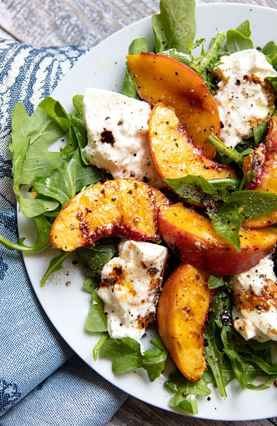
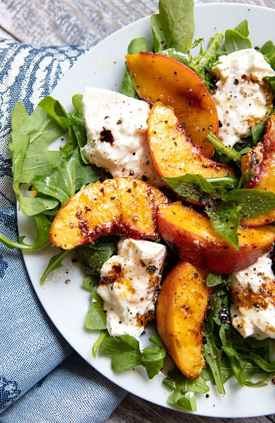
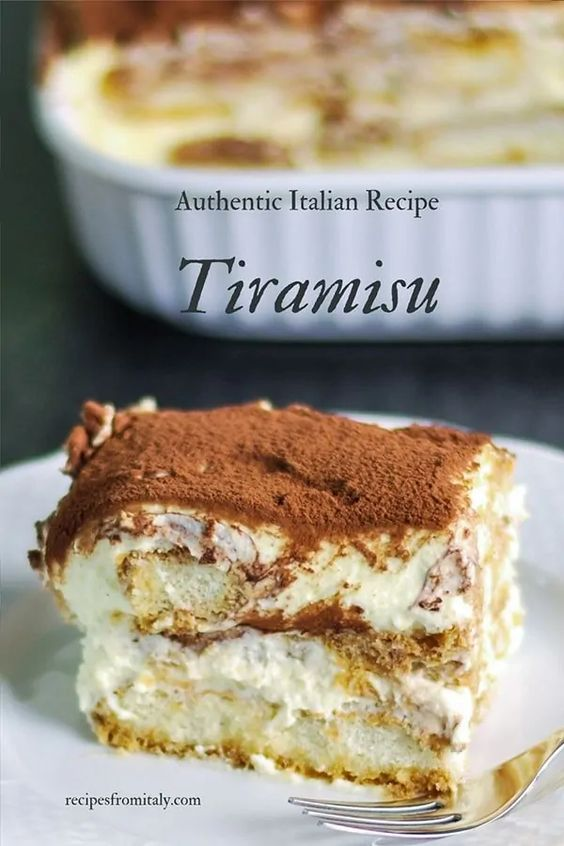
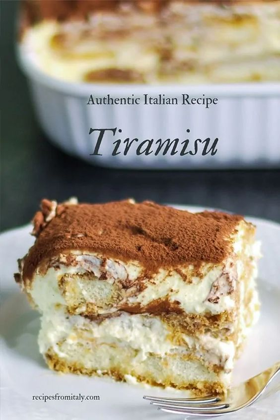

Celebrate a culinary journey through Italy with Azzuro Italian Kitchen re-entry into the heart of Vancouver. The Tuscan-inspired restaurant, located in Yaletown, is just steps away from the Yaletown Skytrain Station.
With a Florentine-styled courtyard and sidewalk patio that graces the front of the restaurant, Azzuro carries guests through a traditional Tuscan adventure by experiencing the bold and rich flavours the Italian region is famous for. Its vaulted ceilings, wooden beams, Tuscan tiles, and hand-painted artwork are designed to symbolize the granaries of old and how they represent the storage of food, where every grain is sacred and protected. Upon stepping inside, you will be transported to the beauty of Tuscany and the Mediterranean. The seasonal outdoor garden patio features fresh seasonal flowers and lush greens.
 



 

Address: 216 Davie st, Vancouver, BC
Hours: Monday-Sunday | 10am-12am
Phone: 604-000-0000
Email: AzzuroItaliano@gmail.com